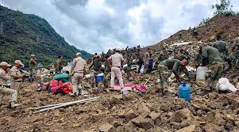

North East

Affected regions:
Arunachal Pradesh, Nagaland, Manipur, Sikkim, West Bengal
Recent disaster
Name : Manipur Landslide
Date : July 02 , 2022
Cause : Continuous rainfall over for three weeks has wreaked havoc across India’s northeast – eight
states with a total population of 45 million – and neighbouring Bangladesh.
Response : More than 250 soldiers, rescuers and police using bulldozers and other equipment were involved
in the operation in Noney. They have been cautioned about more landslides reported in the region on Saturday.
Excavators were also used to search for bodies in a river.
Thirteen soldiers and five civilians have been rescued from the debris of the entirely swept away railway
station, staff residential quarters and other infrastructure that was being built, Kavidayal said.
Damage : Debris of a landslide that wiped out a railway construction site in northeastern India’s Manipur
state
Deaths : 26 were reported as dead and 37 were missing.